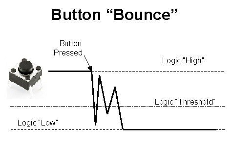

Analog I/O
Debounce
When a button is pressed to switch the state of the circuit, the mechanical button will tend to not switch perfectly, some times bouncing between both contact points and causing what we see in the above state diagram. There are 3 solutions to deal with this.
- Reading the state without debouncing countermeasures
- Debounce using delay() function
- Debounce using millis() function
Analog Signals
- Digital signals
- Can be processed quickly
- transition between states not smooth like analog
- Analog signals
- Naturally occuring
- Do not have discrete voltage, transitions smoothly
- Hard to process
- Conversions
- Analog Digital Conversion(ADC)
- Digital to analog